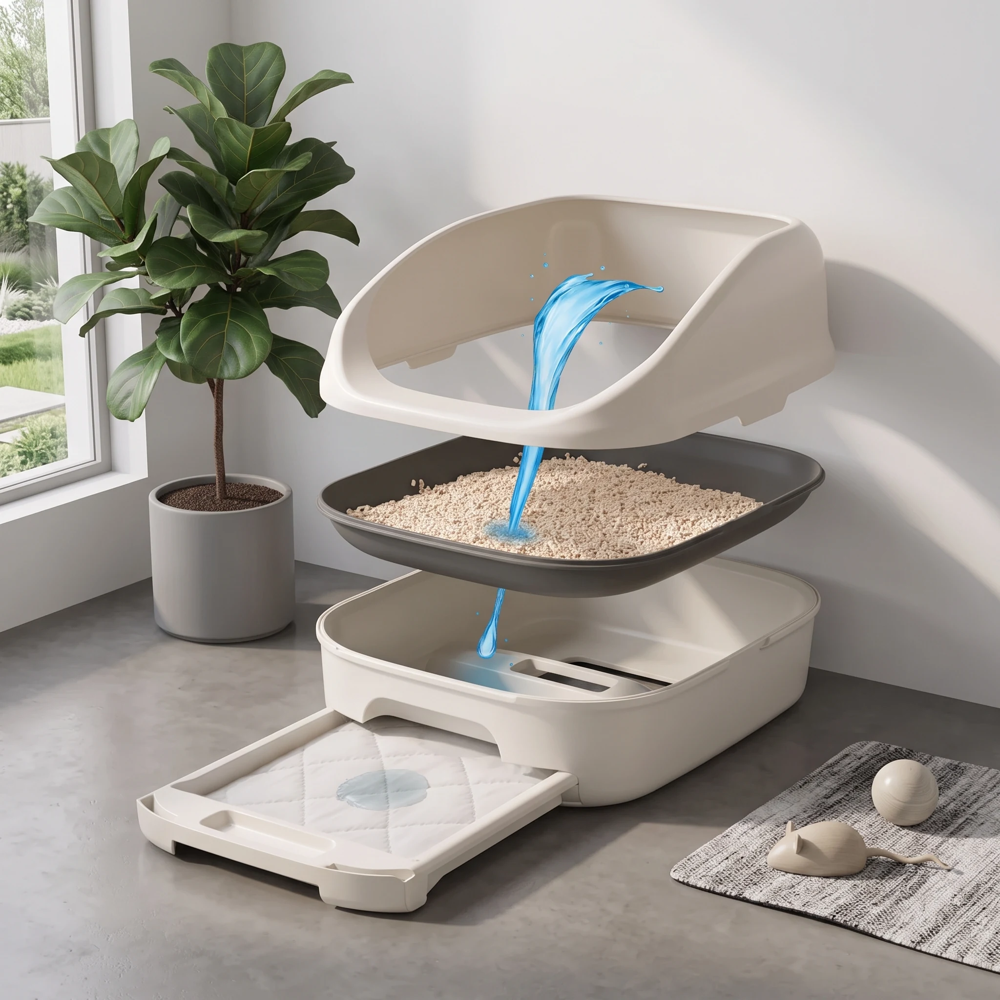
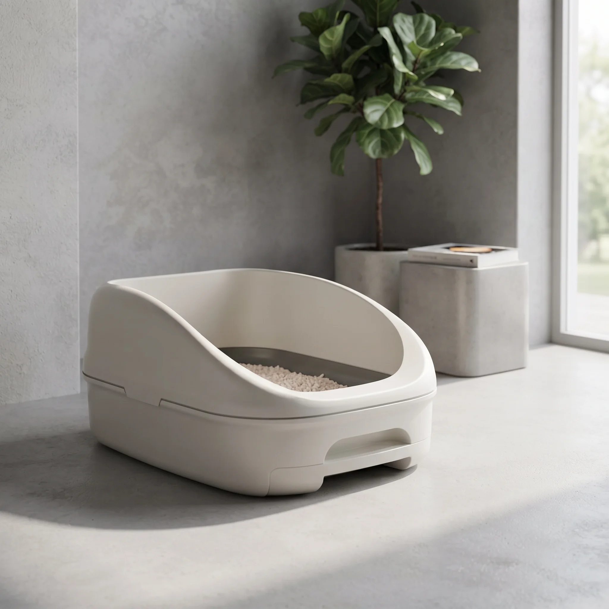
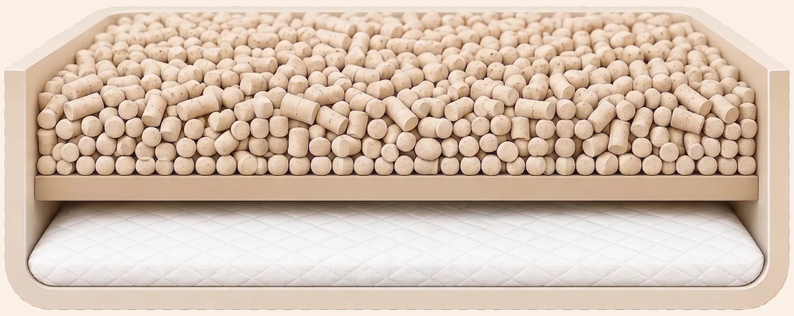

Анатомия лотка
How it works
The Anatomy of ZeoDeo

-
1
No Mess Escapes Raised rim
Tall raised sides keep pellets exactly where they belong, even when your cat digs enthusiastically.
-
2
Odour Starts Draining Immediately Litter grid
Liquid passes straight through the grid to the pad below, instead of sitting on top where the smell builds up.
-
3
Built to Last Outer shell
A solid, leak-proof shell holds everything securely - sized for cats up to 8kg.
-
4
Cleaning in Seconds Pad drawer
Slide the drawer out without lifting the whole tray - swap the pad and you're done.
-
5
No More Litter Box Smell Zeolite pellets
These granules don't absorb liquid - they repel it and trap odour instead, thanks to 700-800 m² of pore surface per cm³. At 5-6mm, too big to stick to paws or scatter across the floor.
-
6
Cleaning Made Simple Absorbent pad
Forget scooping wet litter or scrubbing the tray. One pad locks away a week's mess - slide it out, drop in a fresh one, done in seconds.
Pellets last 30 days · Pad lasts 7 days
Умный калькулятор расхода
Plan your supply
Never Run Out Again
Tell us how many cats you have and we'll work out exactly how much you'll need each month.
⏱ Pellets last 30 days. Pads last 7 days.
Слайдер "До / После"
The ZeoDeo Difference
✓ Nothing sticks, nothing tracks - it stays where it belongs.
Таймлайн приучения кота
Getting started
Helping Your Cat Settle In
In 95% of cases there's no fuss at all - your cat simply starts using the new tray as soon as it replaces the old one. If yours is more cautious, here's the 4-step routine we recommend, taken step by step rather than all at once. Tap any step to preview it.
Getting started
Helping Your Cat Settle In
In 95% of cases there's no fuss at all - your cat simply starts using the new tray as soon as it replaces the old one. If yours is more cautious, here's the 4-step routine we recommend. Tap any step to preview it.
Визуализатор габаритов и цвета

Colourways
See It In Your Room
Pick a tray colour and a room style - the photo updates instantly. Nine ready-made shots, no live rendering.
Динамическая инфографика "путь влаги"
The Path of Moisture & Odour
The real cutaway on the left fills up over the week - watch the matching step light up on the right as it does.

Шкала уровня запаха по дням
4 Главные Фишки
Пелёнка 7 дней
Пелёнка 7 дней
Баннер-хаб "Выбери свой путь"
Two 10-second questions - no signup needed.

FAQ - аккордеон вопросов
Frequently Asked Questions
Cat litter is the material cats use as a toilet inside the home. ZeoDeo uses natural zeolite pellets, which absorb odour instead of moisture - so nothing clumps and there's far less to clean.
Clumping litter forms wet clumps that have to be scooped out whole. ZeoDeo's pellets never clump - liquid drains straight through to an absorbent pad underneath, so you only scoop the solids.
Porous minerals like zeolite work best. Each ZeoDeo pellet packs 700-800 m²/cm³ of surface area that traps odour molecules at a molecular level, rather than masking them with fragrance.
The terms are used interchangeably in the UK. ZeoDeo's tray is a low-entry, open design with a raised rim to catch stray litter and a pull-out drawer for the absorbent pad.
One pack of pellets lasts around 30 days for a single cat, and the absorbent pad lasts about 7 days - just top up or swap on a simple schedule.
Yes - the pellets are virtually dust-free and non-clumping, so there's no risk of a kitten ingesting anything that swells or sticks. Always supervise a kitten's first few visits to a new tray.
Видео-отзывы клиентов
From real households
What Cat Owners Say


 0:31
0:31
 0:20
0:20
← Прокрутите вправо, чтобы посмотреть остальные